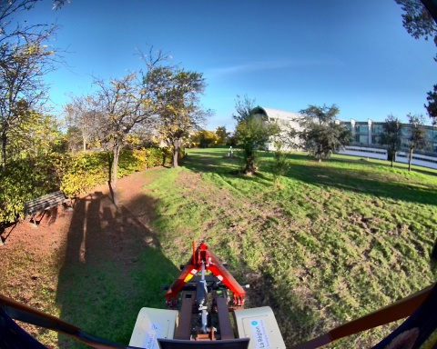
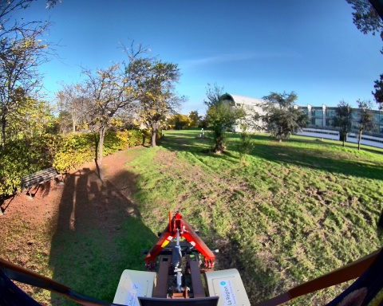
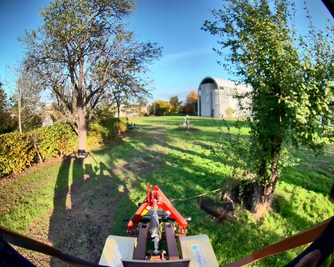
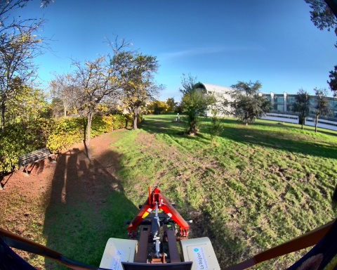
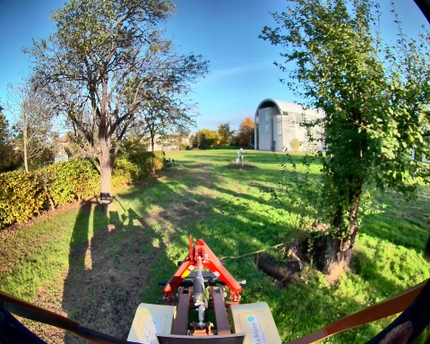

Chemin complet : /data/synchro_data/Innodura/Agrivia/Données/2024_bag/record_2_28_10_2024


Files: record_2_28_10_2024_0.db3
Bag size: 1.0 GiB
Storage id: sqlite3
Duration: 24.697661728s
Start: Oct 28 2024 16:13:07.914115952 (1730128387.914115952)
End: Oct 28 2024 16:13:32.611777680 (1730128412.611777680)
Messages: 16070
Topic information: Topic: /alpo/imu/mag | Type: sensor_msgs/msg/MagneticField | Count: 2459 | Serialization Format: cdr
Topic: /alpo/imu/imu_data_str | Type: std_msgs/msg/String | Count: 2459 | Serialization Format: cdr
Topic: /alpo/lidar/pointcloud_synchro | Type: sensor_msgs/msg/PointCloud2 | Count: 122 | Serialization Format: cdr
Topic: /alpo/camera/image_synchro | Type: sensor_msgs/msg/Image | Count: 123 | Serialization Format: cdr
Topic: /alpo/joint_states | Type: sensor_msgs/msg/JointState | Count: 1 | Serialization Format: cdr
Topic: /alpo/gps/ntrip/rtcm | Type: mavros_msgs/msg/RTCM | Count: 0 | Serialization Format: cdr
Topic: /alpo/imu/data | Type: sensor_msgs/msg/Imu | Count: 2459 | Serialization Format: cdr
Topic: /alpo/base/bridge/vehicle_controller/odom | Type: nav_msgs/msg/Odometry | Count: 246 | Serialization Format: cdr
Topic: /alpo/base/controller/odom | Type: nav_msgs/msg/Odometry | Count: 246 | Serialization Format: cdr
Topic: /alpo/gps/nmea_sentence | Type: nmea_msgs/msg/Sentence | Count: 3702 | Serialization Format: cdr
Topic: /tf | Type: tf2_msgs/msg/TFMessage | Count: 441 | Serialization Format: cdr
Topic: /alpo/gps/fix | Type: sensor_msgs/msg/NavSatFix | Count: 247 | Serialization Format: cdr
Topic: /alpo/robot_description | Type: std_msgs/msg/String | Count: 1 | Serialization Format: cdr
Topic: /rosout | Type: rcl_interfaces/msg/Log | Count: 368 | Serialization Format: cdr
Topic: /alpo/joystick/joy | Type: sensor_msgs/msg/Joy | Count: 155 | Serialization Format: cdr
Topic: /alpo/gps/vel | Type: geometry_msgs/msg/TwistStamped | Count: 231 | Serialization Format: cdr
Topic: /diagnostics | Type: diagnostic_msgs/msg/DiagnosticArray | Count: 99 | Serialization Format: cdr
Topic: /parameter_events | Type: rcl_interfaces/msg/ParameterEvent | Count: 0 | Serialization Format: cdr
Topic: /alpo/imu/velocity | Type: geometry_msgs/msg/TwistStamped | Count: 2459 | Serialization Format: cdr
Topic: /tf_static | Type: tf2_msgs/msg/TFMessage | Count: 6 | Serialization Format: cdr
Topic: /alpo/base/controller/odometry | Type: romea_mobile_base_msgs/msg/OneAxleSteeringMeasureStamped | Count: 246 | Serialization Format: cdr